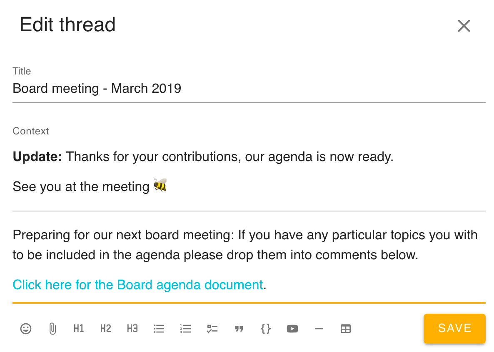

Having discussions
Tips for inclusive and effective discussions on Loomio.
Use Loomio's threads to have discussions that result in clear outcomes.
Facilitation means “to make easier, to help forward." You don't have to be a pro facilitator to help your group have productive discussions. In fact, anyone in a group can make little acts of facilitation. There are many ways to improve your online communications and collaboration. We've also written about the 5 different ways to use threads. This article is a 101 course on Loomio's discussion threads and facilitation.
What makes up a thread
At the top of the thread you can always find the title and context. The context is where you share all the information, links, and prompts that will support group members to interact productively with it. Sometimes it's useful to think of the context like an agenda that you would write up on the wall, or the handout that makes a certain conversation possible.
Below these elements, you will find the comments, where most of the action will happen as people share their thoughts and feelings, alert one another, and use the facilitation tools such as the poll and proposal.
You can always navigate back to your group or subgroup by clicking their names, the links above the thread's title.
Keep the topic concise
Making the thread title and context clear and engaging is the best way to ensure a productive discussion. Take a little time to consider what contribution you would like from the group. For example:
- Will a decision be made within the thread?
- Over what time frame will the discussion take place?
- Are you calling for personal experiences or asking for thoughts about some information?
Make an invitation of thread/group participants, letting them know the quickest way to engage and where it goes next.
Getting attention
Effective use of Loomio means knowing how and when to get attention from the group, group members, and even external people your group wants to engage in Loomio to keep everything in one place.
If you ask for attention when it's really important, and avoid it when it's not, people will keep paying attention.
Loomio has many features for getting attention; learn about them all.
Proposals and polls are a special way to get attention and get group input.
Disagreement
Disagreement is an indicator that someone wants to be listened to, and typically gives valuable information that can lead to new thinking. It's useful to give them an opportunity to explain themselves, whether you reach out in the thread or more privately. Remember, everyone can change their mind while a decision is still open.
Maintain a safe environment
A study of more than 180 teams within Google tells us that the number one factor in team performance is psychological safety.
Respectful disagreement is essential to finding the best solution for the group, but it can be challenging work. For real discussion to happen, you must hold space for differing opinions. Help people express themselves, in a way that allows others to express themselves too.
Raise the bandwidth: If someone is distressed, being too disruptive, or is in a minority opinion they feel strongly about, it’s a good indication that a phone conversation – or, even better, a face-to-face – might help.
For more guidance, see the section of our handbook on conflict.
Who's not present?
If someone's missing, invite them!
Bring group members into a specific discussion by getting their attention (eg, @mentioning them). Try to notice people who have not participated and invite their input.
High quality decisions come from gathering the right inputs. Are there other people the decision affects, who have not shared an opinion?
Inviting diverse participation
Remember to look out for those people who tend to be quiet. Don't just call them out, but consider how best to bring their perspective in, and why they might be participating or vocalizing less than others.
Keep the title and context relevant
Loomio threads are designed to evolve with a discussion, which is why the title and context box are editable. The thread context always remains at the top of the thread in order to frame and guide the conversation or decision. Make it easy for people have a clear, shared understanding of where things are at, or to catch up, by updating the thread context and title with the latest info. This also helps you later if you want to refer back to a previous discussion and quickly remind yourself what happened.
Double-clicking on the context is the quickest way to edit a thread context and title.
Example
Below, the facilitator has made a note so that
- those coming late to this thread know that the agenda is basically finalized
- contributors understand what happened as a result of their agenda suggestions.

Break down complex issues
Mutiple threads or sequential proposals
If a complex discussion is raised, think about breaking it down into multiple threads, one for each different aspect. Or, you might want to raise a series of proposals in the same thread to address different smaller decisions in the same topic. That way, all the context stays in one place.
Working Groups or Committees
Sometimes an issue is helped by delegating a small group to do background research, frame options, or summarize data. They can work together and then come back to the larger group when they're ready to present a decision. Or you can decide to mandate them to move forward autonomously. Think about using subgroups…
Subgroups
If you have an area of collaboration requiring many threads and ongoing collaboration, but it only affects certain people, you can create a subgroup. For example, offices in different geographical locations, teams working on different projects, or groups with a specific mandate like a governance board.
Scaffolding productive discussions
See 5 different ways to use threads to learn about tried and true templates and best practices for conversations that lead to better outcomes.
Next up
The best tool for making decisions is good discussion; it's the best way to frame the topic, seek input, and gather ideas. Often you'll find that you can make progress with comments and replies. Other times, in order to bring the discussion to a clear outcome, you will want the clear calls to engagement and facilitation support of…
→ Proposals and polls